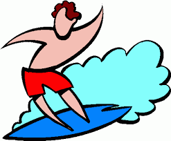

What we are all about
Kasey's surf shop was started up back in late July of 1981. Kasey and his family members, alongside some close buddies, always loved to surf and everything to do with surf style, surf gear, and surfboards. Everytime they had any freetime, they would do everything they could do to get in the water. They also all love to help people and help make everyone feel safer and in more control on the water. Kasey's surf shop is all about having a good time, and making sure your in top top shape and look when going out on the water and shredding some gnarly waves!